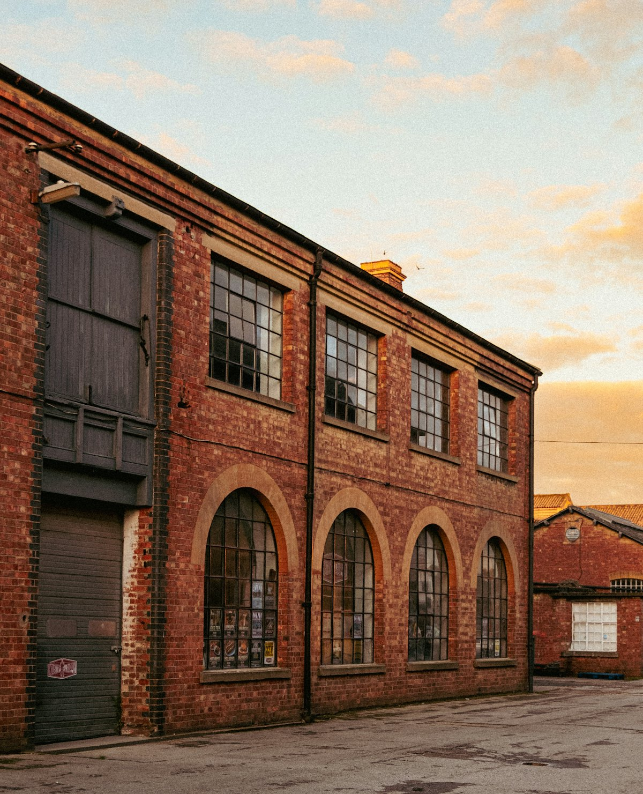
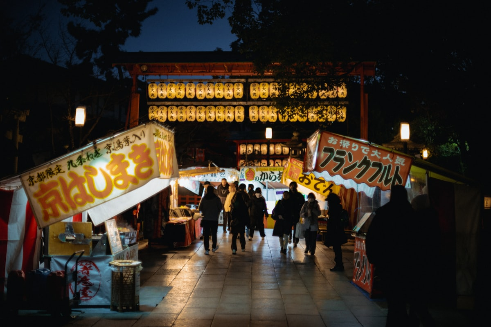

1核心结论
北京→
柳州站→
龙潭公园→
工业博物馆→
马鞍山夜景→
北京
🕐 周末怎么凑（柳州比大连远，两种方案）
方案 A（推荐）：高铁往返——周五请半天假，乘 G93/G421 白天高铁（北京西 09:00–10:15 发，约 9.5h，傍晚/晚上到），周日返程高铁回京，全程不熬夜。方案 B（省时）：飞机往返——飞行约 3.5h，但柳州航班班次少、票价高（单程 800–2300 元），适合时间紧预算松的人。
| 事项 | 结论 |
|---|---|
| 假期 | 周末 + 周五请半天假（高铁方案必请） |
| 推荐方案 | 3 天 2 晚（周五下午 – 周日晚） |
| 回京约束 | 周日晚间到京，周一正常上班 |
| 行程链 | 北京 → 柳州 → 龙潭公园 → 工业博物馆 → 马鞍山 → 北京 |
| 预算（人均） | 经济 1800–2400 元 ／ 标准 2600–3300 元 ／ 舒适 4000–5200 元 |
| 最大优点 | 市区景点几乎全免费（龙潭公园、工业博物馆、马鞍山、窑埠古镇都免票），预算大头是往返交通 |
| 三件提前事 | ① 高铁/机票提前 2–3 周订（柳州航班少，越早越便宜）② 工业博物馆需预约 ③ 酒店住五星步行街附近 |
⚠️ 最关键的判断：高铁还是飞机？
北京 ⇄ 柳州高铁约 9.5–10 小时（二等座约 1099 元），往返路上耗掉近一天，来回车程加起来 20 小时；飞机虽快但 单程 800–2300 元、班次少。周末 3 天其实是「刚好够玩」的极限：高铁方案周五下午出发，等于只有 2 个整天；飞机方案能完整 3 天，但钱包更痛。赶时间请直接选飞机。
2推荐行程 · 3 天版（周五下午 – 周日晚）
请假：周五请半天假（高铁方案）；飞机方案可视航班时间只请周五下午或半天。
| 日期 | 行程 | 过夜地 | 主题 |
|---|---|---|---|
| D1 周五 | 北京 → 柳州（高铁约 9.5h 或飞机约 3.5h），抵达后入住五星步行街附近，青云市场/夜市吃夜宵 | 柳州市区 | 交通 + 首夜 |
| D2 周六 | 上午青云民生市场早餐 → 龙潭公园（喀斯特山水，风雨桥），中午嗦螺蛳粉，下午工业博物馆（绿皮火车、五菱），晚上马鞍山登顶看全城夜景 + 胜利烧烤城 | 柳州市区 | 山水 + 工业 + 夜景 |
| D3 周日 | 上午柳侯公园（柳宗元文化）＋柳州博物馆，中午嗦粉买伴手礼，下午乘水上公交游柳江，傍晚返程回京 | — | 人文收尾 |
🧭 时间不够怎么砍
只能玩 2 天：砍柳州博物馆，D3 上午只逛柳侯公园 + 水上公交。若对工业没兴趣，砍工业博物馆，把 D2 下午换给百里柳江夜游船（约 100 元，看音乐喷泉）。
3逐小时时间线（精确到小时）
以下为 3 天全程的逐小时执行时间线，可当作「当天打开照着走」的清单。标注 ※ 的可选项视体力与天气取舍。
D1（周五）· 北京 → 柳州
高铁约 9.5h
🚄 交通日
| 时间 | 事项 |
|---|---|
| 09:00–10:15 | 北京西站出发，乘 G93 / G421 高铁赴柳州（约 9.5h，二等座约 1099 元） |
| 18:15–20:03 | 抵达柳州站（G93 约 18:15 / G421 约 20:03），打车至酒店 |
| 20:30 | 入住五星步行街附近酒店，放下行李 |
| 21:00 | 夜宵：青云民生市场或酒店附近吃螺蛳粉/炒螺蛳粉，早睡 |
高铁上记得带零食和水；G93 到柳州约 18:15，还能吃个不错的夜宵。飞机方案则傍晚 17 点前后落地，省 6 小时在路上的时间。
D2（周六）· 龙潭公园 + 工业博物馆 + 马鞍山夜景
山水 · 工业 · 夜景三连
🌄 主玩日
| 时间 | 事项 |
|---|---|
| 08:00 | 起床，去青云民生市场吃早餐（露水汤圆、芋头糕、玉米汁，人均 20 元） |
| 09:00–11:30 | 龙潭公园（免费，5A）：喀斯特山水、风雨桥、镜湖，穿汉服拍照 2h |
| 11:30–12:30 | 午餐：聚宝/曹妹螺蛳粉（加炸蛋 + 鸭脚） |
| 13:00–15:00 | 柳州工业博物馆（免费，需预约）：老厂房、绿皮火车、五菱神车，工业风拍照 |
| 15:00–17:00 | ※ 自由活动：窑埠古镇白天逛 / 柳州博物馆 / 回酒店午休三选一 |
| 17:30 | 前往马鞍山公园，乘电梯登顶（上行 20 元） |
| 19:30 | 全城亮灯瞬间（19:30 前后），俯瞰柳江绕城，360° 夜景拍照 |
| 20:30 | 下山步行 10 分钟到胜利烧烤城：炒螺蛳粉、螺蛳鸭脚煲、叮当炒冰 |
马鞍山 19:30 亮灯是全天高光，务必 19:00 前登顶占位。龙潭公园早 8 点前入园能避开旅行团，镜湖人少景美。
D3（周日）· 柳侯公园 + 水上公交 + 返程
人文 + 江景 · 傍晚返京
🚄 返程日
| 时间 | 事项 |
|---|---|
| 08:00 | 早餐：大华干捞粉/融安滤粉（本地早餐） |
| 09:00–10:30 | 柳侯公园（免费）：柳侯祠、柳宗元衣冠墓、百年古树 |
| 10:30–11:30 | ※ 柳州博物馆（免费）：恐龙化石、民族展厅 |
| 11:30–12:30 | 午餐：螺蛳粉收尾 + 五星街买伴手礼（袋装螺蛳粉约 10 元/包） |
| 13:30–15:00 | ※ 水上公交 1 号线（3 元）：南车渡 → 东堤码头，柳江风光游船 |
| 15:30 | 回酒店取行李，前往柳州站 |
| 16:30–23:00 | 乘高铁返京（下午/傍晚车次，G94 等约 9.5h，深夜到北京） |
| 23:30 | 到家，第二天上班（高铁返程较累，建议周一请假半天缓冲） |
高铁返程到北京已深夜，若周一上班累，返程改飞机（傍晚航班 3.5h 到京）。水上公交半小时一班，提前去排队。
4景点图鉴
柳州最大优势：市区景点几乎全免费。必去（必去）/ 顺路（顺路）/ 可跳过（可跳过）。
必去
龙潭公园 免费 · 5A
喀斯特山水 + 民族风情。镜湖、风雨桥、侗寨鼓楼超出片，城市天然氧吧。

必去柳州工业博物馆 免费 · 需预约
全国首个城市工业博物馆。巨型绿皮火车、老式汽车、五菱神车，工业风拍照天花板。
必去
马鞍山公园 免费 · 电梯 20 元
柳州市区最高点。19:30 全城亮灯瞬间超震撼，柳江绕城如带，360° 夜景。

顺路窑埠古镇 免费
仿古建筑群，夜景灯光绝美，汉服/民族服饰拍照圣地，江边游船看柳江。
顺路
柳侯公园 免费 · 4A
纪念柳宗元的古典园林。柳侯祠、罗池、百年古树，园内柳侯祠有国家一级文物荔子碑。
 顺路
顺路百里柳江 游船约 100 元 / 水上公交 3 元
柳江穿城而过。音乐喷泉（20:00/21:00）、蟠龙山瀑布；省钱玩法坐 3 元水上公交。
部分图片为 Unsplash 广西喀斯特山水主题图（龙潭公园同款喀斯特地貌），用于页面配图。更多免费景点：青云民生市场（早市）、柳州博物馆、鱼峰公园、都乐公园。
5路线地图
点击左侧节点可在地图上定位；点击地图 marker 会高亮对应节点。坐标为 WGS-84 转 GCJ-02 纠偏后标注。
6预算明细（三档）
以下为单人、不含购物的估算；柳州市区景点几乎全免费，预算大头是往返交通。高铁往返约 2200 元、飞机往返约 2000–4600 元。
| 项目 | 经济（1800–2400） | 标准（2600–3300） | 舒适（4000–5200） |
|---|---|---|---|
| 往返交通 | 高铁往返约 2200 | 高铁二等座往返约 2200 | 飞机往返约 3000–4000 |
| 住宿（2 晚） | 快捷 200–300 | 市中心连锁 400–600 | 五星/江景酒店 800–1200 |
| 门票 | 基本全免（马鞍山电梯 20） | 马鞍山电梯 20 + 夜游船 100 | 夜游船 + 汉服体验 + 贡多拉 |
| 餐饮（3 天） | 100–150 | 180–260（顿顿嗦粉 + 鸭脚煲） | 300–450（含正餐 + 夜市） |
| 市内交通 | 公交 + 步行 30 | 打车 + 水上公交 60–90 | 打车为主 120–180 |
💰 标准档示例账单（人均约 2900 元）
高铁往返 2200 + 住宿 2 晚 500（双人分 1000）+ 马鞍山电梯 20 + 夜游船 100 + 餐饮 220 + 市内交通 80 ≈ 3120 元。若改飞机（往返约 3500），总花费会跳到 4500 上下，主要看你对「时间 vs 钱包」的取舍。
7备选方案
7.1 三江侗族风情（延长版）
时间充足时，柳州市区 → 三江侗族自治县（约 2h），看程阳八寨风雨桥、三江鼓楼、侗族百家宴。适合对少数民族文化感兴趣的人，但需要多留 1 天，周末档一般不够。
7.2 纯市区慢游版（不赶路）
砍掉工业博物馆和柳州博物馆，行程改为：D2 龙潭公园 + 窑埠古镇 + 马鞍山夜景，D3 柳侯公园 + 水上公交 + 嗦粉。适合纯休闲，日均步数少一半。
7.3 飞机往返（省 12 小时）
北京 → 柳州飞行约 3.5h，周五傍晚航班落地即可逛夜市，周日晚返京不熬夜。代价是单程 800–2300 元、班次少（多为国航，每天 1–3 班）。提前 2 周盯价格能买到 1000 元上下的票。
8交通与住宿
8.1 北京 ⇄ 柳州 交通
| 方式 | 时长 | 参考价 | 备注 |
|---|---|---|---|
| 高铁（性价比） | 9.5–10h | 二等座约 1099 元 | G93（北京西 09:00 → 柳州 18:15）、G421（10:15 → 20:03） |
| 飞机（省时间） | 约 3.5h | 800–2300 元 | 班次少，多为国航，早订便宜 |
| 普速直达 | 20–31h | 硬卧 446–458 元 | Z/K 字头，太耗时，周末不推荐 |
⚠️ 高铁时间不短
9.5 小时的高铁单程并不轻松。白天车次至少保证上车睡觉、下车就玩；返程尽量选傍晚到达的车次，避免深夜折腾。
8.2 市内交通
- 打车：起步价低，市区景点之间多为起步价内（10 元上下）。
- 水上公交：3 元/人，1 号线南车渡 → 东堤码头，游柳江性价比之王。
- 共享电驴：酒店可租，约 35 元/天，市区骑行自由，最推荐。
- 公交：龙潭公园 19 路直达；大部分景点相距 2 公里内，骑行/步行 10 分钟。
8.3 住宿区域推荐
| 区域 | 价格/晚 | 优点 | 短板 |
|---|---|---|---|
| 五星步行街/市中心 | 200–400 | 吃逛出行超方便，青云市场、柳侯公园步行可达 | 周末可能满房，提前订 |
| 窑埠古镇/柳江边 | 300–500 | 江景 + 夜景，窑埠古镇就在楼下 | 离柳州站略远 |
| 柳州站附近 | 150–300 | 到站即住、返程方便 | 环境一般，餐饮选择少 |
9美食清单
🍜 必吃螺蛳粉
- 聚宝、曹妹、凤张（居民区老店，加炸蛋 + 鸭脚）
- 干捞螺蛳粉、炒螺蛳粉都值得试
- 微辣起步，不吃辣提前说
🥘 夜宵硬菜
- 螺蛳鸭脚煲（鸭脚软糯脱骨）
- 凉拌牛杂、酸嘢（酸爽开胃）
- 张飞木薯羹（甜品收尾）
- 胜利烧烤城：炒螺蛳粉 15 元、叮当炒冰 20 元
🍳 本地早餐
- 青云民生市场：露水汤圆、芋头糕、玉米汁
- 大华干捞粉、融安滤粉
- 冰碴豆花、芝麻糊（均价 5–15 元）
📍 去哪吃
- 五星街商圈（游客方便，选择多）
- 青云市场（本地人早餐天堂）
- 胜利烧烤城（夜市烟火气）
- 景区周边螺蛳粉易踩雷，认准居民区老店
⚠️ 螺蛳粉防雷
① 默认偏辣，不吃辣提前说；② 鸭脚煲分量足，2 人点小份即可；③ 夜市海鲜/烧烤先问价再下单；④ 景区门口的「网红螺蛳粉」很多是割游客的，居民区老店才是王道。
10出行贴士
10.1 行前清单
- 身份证、充电宝、薄外套（早晚温差大）
- 防晒霜、雨伞（南方多阵雨）
- 运动鞋（龙潭公园/马鞍山都要走路）
- 下载地图 App、备零钱
- 高铁/机票提前 2–3 周订
- 工业博物馆、马鞍山电梯线上预约
- 酒店选可免费取消，住五星步行街附近
- 天气 app 关注降雨
10.2 防踩坑
🧳 四条提醒
① 机场/高铁站黑车多，优先网约车/正规出租；② 水上公交半小时一班，提前排队；③ 苗寨银饰谨慎购买，伴手礼去青云市场买袋装螺蛳粉（10 元/包）；④ 工业博物馆周一闭馆，别扑空。
🌟 一句话总结
柳州是「景点全免费、嗦粉吃到爽」的宝藏城市——龙潭公园看喀斯特山水、工业博物馆拍工业大片、马鞍山看柳江夜景、螺蛳粉连嗦三顿不重样。唯一的门槛是往返 20 小时的高铁，选对交通方式，周末 3 天也能玩得尽兴。